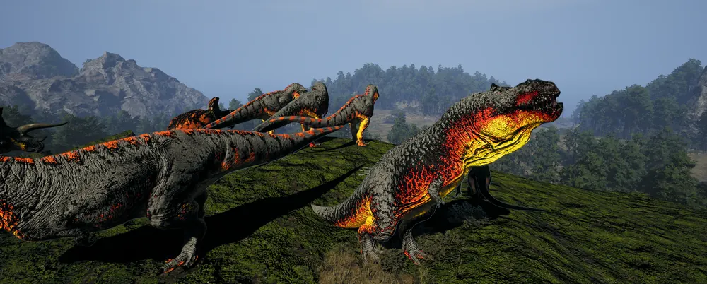

Ruta de logros
Los logros de Asura, sesión a sesión. Trae los tuyos de Nexus pegando tu lista, o márcalos a mano.
Tu progreso
Cómo empezar
Entra con Discord
Con el botón de tu cuenta, aquí abajo. Discord te pregunta si dejas que la web sepa quién eres y compruebe que estás en el servidor del clan: acepta. Si prefieres no entrar, tus marcas se quedan solo en este navegador.
Trae tus logros de Nexus
Abre tu lista, cópiala entera y pégala en «Tu lista de Nexus». Lo que ya tienes se marca solo, sin ir uno a uno.
Sigue la ruta
En «Ahora toca» tienes la sesión que te toca, con el dino y lo que hay que hacer en ella, paso a paso.
Cuando consigas logros nuevos, vuelve a pegar la lista de Nexus o márcalos a mano: nunca se borra nada de lo que ya tenías. En otro móvil u ordenador, entra con Discord y lo verás todo.
Tu cuenta
Entra con tu cuenta de Discord para no perder nada y verlo en cualquier dispositivo. Solo miembros del servidor del clan. Guardamos tu identificador de Discord, tu nombre, tus logros y sus fechas: ni correo, ni contraseña, ni lista de amigos, y solo tú ves lo tuyo. Todos los detalles.
Sin entrar también funciona: tus marcas se guardan solo en este navegador.
Tu cuenta
Hola, . Tus marcas se guardan en tu cuenta.
Se borrarán tu cuenta, todos tus logros y sus fechas. No se puede deshacer: descarga antes tus datos si los quieres conservar. Las copias de recuperación se renuevan en unos días (detalles).
Trae tus logros de Nexus
- Abre tu lista de logros en Nexus (se abre en una pestaña nueva). Se ve como un texto raro: es normal. Si solo pone «Unauthorized», entra antes en Nexus y vuelve a abrirla.
- Copia toda la página: Ctrl+A y Ctrl+C. En el móvil, mantén pulsado el texto y elige «Seleccionar todo». En Firefox, abre antes la segunda pestaña de arriba (datos sin procesar, «Raw Data»).
- Vuelve aquí y pégala en este recuadro: tus logros se marcan solos.
Lo que pegas se lee solo en tu navegador y ese texto no se envía a ningún sitio: solo se guardan las marcas que salen de él, en este navegador y, si has entrado, en tu cuenta. Nunca quita nada: solo añade lo que te faltaba, y puedes seguir marcando a mano.
¿Ya usabas la ruta? Trae tu código
Pega el código que empieza por GR1. Nunca quita nada: solo añade lo que te faltaba. También puedes copiar el tuyo, para llevarlo a otro navegador sin cuenta.
Tu trayectoria
La ruta
Una sesión por dino, ordenadas por zonas. Abre también la lista de logros y trae de Nexus o marca a mano lo que ya tengas: la ruta salta lo que esté hecho.
Qué hacer
Has hecho todas las sesiones de la ruta. Lo que te quede está en la lista de logros.
Toda la ruta
1Edificios de The PitDryosaurus
Date una vuelta entre los edificios.
Qué hacer
- Aparece con Dryosaurus.
- Recién salido, con menos del 30%, teletranspórtate desde Nexus a The Pit plains.
- Dryosaurus → edificios de The Pit
- Crecer hasta el 100%a mano o con carta de crecimiento si la tienes
- Llegar a Primea mano o con carta de Prime si la tienes
2Pit PondDiabloceratops
La charca junto a The Pit: métete en el agua o quédate en la orilla.
Qué hacer
- Aparece con Diabloceratops.
- Recién salido, con menos del 30%, teletranspórtate desde Nexus a The Pit plains.
- Diabloceratops → Pit Pond
- Crecer hasta el 100%a mano o con carta de crecimiento si la tienes
- Llegar a Primea mano o con carta de Prime si la tienes
3The PitDeinosuchus
Qué hacer
- Aparece con Deinosuchus.
- Recién salido, con menos del 30%, teletranspórtate desde Nexus a The Pit plains.
- Deinosuchus → The Pit
- Crecer hasta el 100%a mano o con carta de crecimiento si la tienes
- Llegar a Primea mano o con carta de Prime si la tienes
4MudflatsMaiasaura
Qué hacer
- Aparece con Maiasaura.
- Recién salido, con menos del 30%, teletranspórtate desde Nexus a The Pit plains.
- Maiasaura → Mudflats
- Crecer hasta el 100%a mano o con carta de crecimiento si la tienes
- Llegar a Primea mano o con carta de Prime si la tienes
5SW SanctuaryPachycephalosaurus
Lo más probable es el santuario S5. Quédate dentro un rato.
Qué hacer
- Aparece con Pachycephalosaurus.
- Recién salido, con menos del 30%, teletranspórtate desde Nexus a The Pit plains.
- Pachycephalosaurus → SW Sanctuary
- Crecer hasta el 100%a mano o con carta de crecimiento si la tienes
- Llegar a Primea mano o con carta de Prime si la tienes
6South PlainsHypsilophodon
Qué hacer
- Aparece con Hypsilophodon.
- Hypsilophodon → South Plains
- Crecer hasta el 100%a mano o con carta de crecimiento si la tienes
- Llegar a Primea mano o con carta de Prime si la tienes
7West RailDilophosaurus
Qué hacer
- Aparece con Dilophosaurus.
- Recién salido, con menos del 30%, teletranspórtate desde Nexus a West Rail.
- Dilophosaurus → West Rail
- Crecer hasta el 100%a mano o con carta de crecimiento si la tienes
- Llegar a Primea mano o con carta de Prime si la tienes
8West SanctuaryTenontosaurus
Prueba el santuario S7, cerca de West Rail; si no cuenta, el S6.
Qué hacer
- Aparece con Tenontosaurus.
- Recién salido, con menos del 30%, teletranspórtate desde Nexus a West Rail.
- Tenontosaurus → West Sanctuary
- Crecer hasta el 100%a mano o con carta de crecimiento si la tienes
- Llegar a Primea mano o con carta de Prime si la tienes
9The HighlandsOmniraptor
Qué hacer
- Aparece con Omniraptor.
- Recién salido, con menos del 30%, teletranspórtate desde Nexus a Highland.
- Pega las coordenadas de cada punto en el mapa de Nexus para ver si estás encima.
- Omniraptor → The Highlands
- Huella I12radio 10 ≈ 100 m · quédate ~1 min
- Crecer hasta el 100%a mano o con carta de crecimiento si la tienes
- Llegar a Primea mano o con carta de Prime si la tienes
10The SwampHerrerasaurus
Qué hacer
- Aparece con Herrerasaurus.
- Recién salido, con menos del 30%, teletranspórtate desde Nexus a Swamps.
- Herrerasaurus → The Swamp
- Crecer hasta el 100%a mano o con carta de crecimiento si la tienes
- Llegar a Primea mano o con carta de Prime si la tienes
11DeltaKentrosaurus
Qué hacer
- Aparece con Kentrosaurus.
- Recién salido, con menos del 30%, teletranspórtate desde Nexus a Delta river & Coastal Pond.
- Pega las coordenadas de cada punto en el mapa de Nexus para ver si estás encima.
- Kentrosaurus → Delta
- Huella K15radio 10 ≈ 100 m · quédate ~1 min
- Puerta K12radio 5 ≈ 50 m · quédate ~1 min
- Puerta L15radio 5 ≈ 50 m · quédate ~1 min
- Puerta K15radio 5 ≈ 50 m · quédate ~1 min
- Puerta J16radio 5 ≈ 50 m · quédate ~1 min
- Crecer hasta el 100%a mano o con carta de crecimiento si la tienes
- Llegar a Primea mano o con carta de Prime si la tienes
12Central SanctuaryStegosaurus
Prueba el santuario S3, el grande del centro-este, y quédate dentro un rato.
Qué hacer
- Aparece con Stegosaurus.
- Recién salido, con menos del 30%, teletranspórtate desde Nexus a Delta river & Coastal Pond.
- Stegosaurus → Central Sanctuary
- Crecer hasta el 100%a mano o con carta de crecimiento si la tienes
- Llegar a Primea mano o con carta de Prime si la tienes
13Shallow BeachTroodon
El islote frente a la playa.
Qué hacer
- Aparece con Troodon.
- Troodon → islote de Shallow Beach
- Crecer hasta el 100%a mano o con carta de crecimiento si la tienes
- Llegar a Primea mano o con carta de Prime si la tienes
14La presaCarnotaurus
Junto a Dam Lake.
Qué hacer
- Aparece con Carnotaurus.
- Recién salido, con menos del 30%, teletranspórtate desde Nexus a Water Access & Central Jungle.
- Pega las coordenadas de cada punto en el mapa de Nexus para ver si estás encima.
- Carnotaurus → The Dam
- Huella F11radio 10 ≈ 100 m · quédate ~1 min
- Crecer hasta el 100%a mano o con carta de crecimiento si la tienes
- Llegar a Primea mano o con carta de Prime si la tienes
15La presaGallimimus
Junto a Dam Lake.
Qué hacer
- Aparece con Gallimimus.
- Recién salido, con menos del 30%, teletranspórtate desde Nexus a Water Access & Central Jungle.
- Gallimimus → The Dam
- Crecer hasta el 100%a mano o con carta de crecimiento si la tienes
- Llegar a Primea mano o con carta de Prime si la tienes
16El VolcánAllosaurus
Cráter del volcán.
Qué hacer
- Aparece con Allosaurus.
- Recién salido, con menos del 30%, teletranspórtate desde Nexus a Water around the Volcano.
- Pega las coordenadas de cada punto en el mapa de Nexus para ver si estás encima.
- Allosaurus → The Volcano
- Huella E15radio 10 ≈ 100 m · quédate ~1 min
- Huella F16radio 10 ≈ 100 m · quédate ~1 min
- Huella G15radio 10 ≈ 100 m · quédate ~1 min
- Puerta G15radio 5 ≈ 50 m · quédate ~1 min
- Puerta H16radio 5 ≈ 50 m · quédate ~1 min
- Puerta F17 Iradio 5 ≈ 50 m · quédate ~1 min
- Crecer hasta el 100%a mano o con carta de crecimiento si la tienes
- Llegar a Primea mano o con carta de Prime si la tienes
17El VolcánTriceratops
Cráter del volcán.
Qué hacer
- Aparece con Triceratops.
- Recién salido, con menos del 30%, teletranspórtate desde Nexus a Water around the Volcano.
- Triceratops → The Volcano
- Crecer hasta el 100%a mano o con carta de crecimiento si la tienes
- Llegar a Primea mano o con carta de Prime si la tienes
18North LakeCeratosaurus
Qué hacer
- Aparece con Ceratosaurus.
- Recién salido, con menos del 30%, teletranspórtate desde Nexus a N. Plains & N. Jungle.
- Pega las coordenadas de cada punto en el mapa de Nexus para ver si estás encima.
- Ceratosaurus → North Lake
- Huella C14radio 10 ≈ 100 m · quédate ~1 min
- Puerta D17radio 5 ≈ 50 m · quédate ~1 min
- Puerta C16radio 5 ≈ 50 m · quédate ~1 min
- Puerta E17radio 5 ≈ 50 m · quédate ~1 min
- Puerta D18radio 5 ≈ 50 m · quédate ~1 min
- Puerta C17radio 5 ≈ 50 m · quédate ~1 min
- Puerta C15radio 5 ≈ 50 m · quédate ~1 min
- Puerta C14radio 5 ≈ 50 m · quédate ~1 min
- Puerta D14radio 5 ≈ 50 m · quédate ~1 min
- Crecer hasta el 100%a mano o con carta de crecimiento si la tienes
- Llegar a Primea mano o con carta de Prime si la tienes
19El PortAustroraptor
El puerto, en la costa este.
Qué hacer
- Aparece con Austroraptor.
- Recién salido, con menos del 30%, teletranspórtate desde Nexus a Eastern Jungle.
- Pega las coordenadas de cada punto en el mapa de Nexus para ver si estás encima.
- Austroraptor → The Port
- Huella G20radio 25 ≈ 250 m · quédate ~1 min
- Puerta G20radio 5 ≈ 50 m · quédate ~1 min
- Puerta G18radio 5 ≈ 50 m · quédate ~1 min
- Puerta H19radio 5 ≈ 50 m · quédate ~1 min
- Puerta G19radio 5 ≈ 50 m · quédate ~1 min
- Puerta G17radio 5 ≈ 50 m · quédate ~1 min
- Puerta F17 IIradio 5 ≈ 50 m · quédate ~1 min
- Crecer hasta el 100%a mano o con carta de crecimiento si la tienes
- Llegar a Primea mano o con carta de Prime si la tienes
20El PortBeipiaosaurus
El puerto, en la costa este.
Qué hacer
- Aparece con Beipiaosaurus.
- Recién salido, con menos del 30%, teletranspórtate desde Nexus a Eastern Jungle.
- Beipiaosaurus → The Port
- Crecer hasta el 100%a mano o con carta de crecimiento si la tienes
- Llegar a Primea mano o con carta de Prime si la tienes
21Port ContainersTyrannosaurus
Los contenedores del puerto.
Qué hacer
- Aparece con Tyrannosaurus.
- Recién salido, con menos del 30%, teletranspórtate desde Nexus a Eastern Jungle.
- Tyrannosaurus → Port Containers
- Crecer hasta el 100%a mano o con carta de crecimiento si la tienes
- Llegar a Primea mano o con carta de Prime si la tienes
22La CúpulaPteranodon
Posarte en el tejado de la Cúpula. De adulto no hay teletransporte: ve volando.
Qué hacer
- Aparece con Pteranodon.
- Pega las coordenadas de cada punto en el mapa de Nexus para ver si estás encima.
- Pteranodon → tejado de The Dome
- Huella L11radio 10 ≈ 100 m · quédate ~1 min
- Puerta L12radio 5 ≈ 50 m · quédate ~1 min
- Crecer hasta el 100%a mano o con carta de crecimiento si la tienes
- Llegar a Primea mano o con carta de Prime si la tienes
Teletransporte de Nexus: menos del 30% de crecimiento, estamina al 100%, quieto 20 s y 3 min de espera entre uno y otro.
Todos los logros
AllosaurusCarnívoro
- Explorador · The Volcano
- Crecer
- Llegar a Prime
- Cazar herbívoros ≥75%
- Horas jugadas
- Morir por fauna · 50 muertes
AustroraptorCarnívoro
- Explorador · The Port
- Crecer
- Llegar a Prime
- Cazar herbívoros
- Horas jugadas
- Morir por fauna · 50 muertes
CarnotaurusCarnívoro
- Explorador · The Dam
- Crecer
- Llegar a Prime
- Cazar herbívoros ≥50%
- Horas jugadas
- Morir por fauna · 50 muertes
CeratosaurusCarnívoro
- Explorador · North Lake
- Crecer
- Llegar a Prime
- Cazar herbívoros ≥75%
- Horas jugadas
- Morir por fauna · 50 muertes
DeinosuchusCarnívoro
- Explorador · The Pit
- Crecer
- Llegar a Prime
- Cazar herbívoros ≥75%
- Cazar carnívoros ≥75%
- Horas jugadas
- Morir por fauna · 25 muertes
DilophosaurusCarnívoro
- Explorador · West Rail
- Crecer
- Llegar a Prime
- Cazar herbívoros ≥50%
- Horas jugadas
- Morir por fauna · 50 muertes
HerrerasaurusCarnívoro
- Explorador · The Swamp
- Crecer
- Llegar a Prime
- Cazar herbívoros
- Horas jugadas
- Morir por fauna · 50 muertes
OmniraptorCarnívoro
- Explorador · The Highlands
- Crecer
- Llegar a Prime
- Cazar herbívoros ≥50%
- Horas jugadas
- Morir por fauna · 50 muertes
PteranodonCarnívoro
- Explorador · tejado de The Dome
- Crecer
- Llegar a Prime
- Cazar herbívoros ≥30%
- Cazar carnívoros ≥30%
- Horas jugadas
- Morir por fauna · 50 muertes
TroodonCarnívoro
- Explorador · islote de Shallow Beach
- Crecer
- Llegar a Prime
- Cazar herbívoros
- Horas jugadas
- Morir por fauna · 50 muertes
TyrannosaurusCarnívoro
- Explorador · Port Containers
- Crecer
- Llegar a Prime
- Cazar herbívoros ≥75%
- Cazar carnívoros ≥75%
- Horas jugadas
- Morir por fauna · 50 muertes
DiabloceratopsHerbívoro
- Explorador · Pit Pond
- Crecer
- Llegar a Prime
- Cazar carnívoros ≥75%
- Horas jugadas
DryosaurusHerbívoro
- Explorador · edificios de The Pit
- Crecer
- Llegar a Prime
- Horas jugadas
HypsilophodonHerbívoro
- Explorador · South Plains
- Crecer
- Llegar a Prime
- Horas jugadas
KentrosaurusHerbívoro
- Explorador · Delta
- Crecer
- Llegar a Prime
- Cazar carnívoros ≥75%
- Horas jugadas
MaiasauraHerbívoro
- Explorador · Mudflats
- Crecer
- Llegar a Prime
- Cazar carnívoros ≥75%
- Horas jugadas
PachycephalosaurusHerbívoro
- Explorador · SW Sanctuary
- Crecer
- Llegar a Prime
- Cazar carnívoros ≥50%
- Horas jugadas
StegosaurusHerbívoro
- Explorador · Central Sanctuary
- Crecer
- Llegar a Prime
- Cazar carnívoros ≥75%
- Horas jugadas
TenontosaurusHerbívoro
- Explorador · West Sanctuary
- Crecer
- Llegar a Prime
- Cazar carnívoros ≥50%
- Horas jugadas
TriceratopsHerbívoro
- Explorador · The Volcano
- Crecer
- Llegar a Prime
- Cazar carnívoros ≥75%
- Horas jugadas
BeipiaosaurusOmnívoro
- Explorador · The Port
- Crecer
- Llegar a Prime
- Cazar carnívoros
- Cazar herbívoros
- Horas jugadas
- Morir por fauna · 50 muertes
GallimimusOmnívoro
- Explorador · The Dam
- Crecer
- Llegar a Prime
- Cazar carnívoros ≥50%
- Cazar herbívoros ≥50%
- Horas jugadas
- Morir por fauna · 50 muertes
Puertas y huellasPuntos del mapa, con cualquier dino
- Huella C14X -426, Y 198
- Huella E15X -327, Y 239
- Huella F11X -242, Y 51
- Huella F16X -250, Y 338
- Huella G15X -222, Y 286
- Huella G20X -218, Y 531
- Huella I12X -100, Y 85
- Huella K15X 36, Y 260
- Huella L11X 102, Y 28
- Puerta K12X 24, Y 78
- Puerta L15X 59, Y 267
- Puerta G20X -82, Y 439
- Puerta G18X -196, Y 450
- Puerta D17X -399, Y 399
- Puerta C16X -419, Y 321
- Puerta G15X -218, Y 289
- Puerta H16X -161, Y 297
- Puerta L12X 70, Y 64
- Puerta K15X 5, Y 276
- Puerta J16X -38, Y 296
- Puerta H19X -156, Y 505
- Puerta G19X -200, Y 509
- Puerta G17X -209, Y 403
- Puerta F17 IX -242, Y 392
- Puerta F17 IIX -258, Y 397
- Puerta E17X -314, Y 397
- Puerta D18X -372, Y 413
- Puerta C17X -411, Y 356
- Puerta C15X -452, Y 263
- Puerta C14X -426, Y 229
- Puerta D14X -380, Y 215
Horas totalesCon cualquier dino
- Horas totales con cualquier dino
Que te matenCada especie te mata, ella con ≥75%
- Que te mate un Tyrannosaurus
- Que te mate un Deinosuchus
- Que te mate un Allosaurus
- Que te mate un Triceratops
- Que te mate un Ceratosaurus
- Que te mate un Carnotaurus
- Que te mate un Stegosaurus
- Que te mate un Omniraptor
- Que te mate un Dilophosaurus
- Que te mate un Kentrosaurus
- Que te mate un Pachycephalosaurus
- Que te mate un Diabloceratops
- Que te mate un Herrerasaurus
- Que te mate un Tenontosaurus
- Que te mate un Maiasaura
- Que te mate un Troodon
- Que te mate un Pteranodon
- Que te mate un Austroraptor
- Que te mate un Gallimimus
Lista de logros mirada el . Los puntos del mapa son aproximados: si uno no cuenta, muévete un poco y espera un minuto. Puede cambiar con cada temporada.